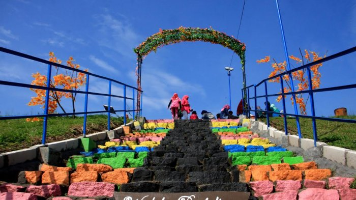

WISATA WADUK PENJALIN
Wisata Waduk Penjalin di Paguyangan Brebes Jawa Tengah adalah salah satu tempat wisata yang berada di Jalan Raya Waduk Penjalin 4, RT 03/ 01, Desa Winduaji, Kecamatan Paguyangan, Kabupaten Brebes, Jawa Tengah. Wisata Waduk Penjalin di Paguyangan Brebes Jawa Tengah adalah tempat wisata yang ramai dikunjungi pada hari biasa maupun hari liburan. Tempat ini sangat indah dan bisa memberikan sensasi yang berbeda dengan aktivitas kita sehari hari.
Wisata Waduk Penjalin di Paguyangan Brebes Jawa Tengah memiliki pesona keindahan yang sangat menarik untuk dikunjungi. Sangat di sayangkan jika anda berada di kota Brebes tidak mengunjungi Wisata Waduk Penjalin di Paguyangan Brebes Jawa Tengah yang mempunyai keindahan yang tiada duanya tersebut.
Wisata Waduk Penjalin di Paguyangan Brebes Jawa Tengah sangat cocok untuk mengisi kegiatan liburan anda, apalagi saat liburan panjang seperti libur nasional, ataupun hari libur lainnya. Keindahan Wisata Waduk Penjalin di Paguyangan Brebes Jawa Tengah ini sangatlah baik bagi anda semua yang berada di dekat atau di kejauhan untuk merapat mengunjungi tempat wisata Waduk Penjalin di kota Brebes.
Wisata Waduk Penjalin di Paguyangan Brebes Jawa Tengah merupakan tempat wisata yang harus anda kunjungi karena pesona keindahannya tidak ada duanya. Penduduk lokal daerah Wisata Waduk Penjalin di Paguyangan Brebes Jawa Tengah juga sangat ramah tamah terhadap Anda yang tinggal di Brebes. maupun yang tinggal di luar kota brebes . Kota Wisata Waduk Penjalin di Paguyangan Brebes Jawa Tengah juga terkenal akan Wisata Waduk Penjalin di Paguyangan Brebes Jawa Tengah yang sangat menarik untuk dikunjungi.
Wisata Waduk Penjalin di Paguyangan Brebes Jawa Tengah memiliki tempat yang sejuk dan asri serta tidak terlalu banyak menguras kantong anda. Di sana anda dapat merasakan segarnya angin yang dihembuskan dari pepohonan yang rindang yang terdapat di sekeliling waduk, angin yang dihembuskan jauh lebih segar dibandingkan dengan angin laut yang terasa kering dan sepet di mata. Kesegaran angin ini akan terasa lebih nikmat ketika anda berada di tengah waduk dengan mengendarai prahu yang dapat disewa.
Selain kesegaran angin, anda juga dapat menyaksikan pemandangan lain misalnya gadis-gadis desa yang mandi dan mencuci di pinggiran waduk, tentu saja bukan hanya gadis tapi nenek-nenek juga tidak sedikit yang mencuci di pinggiran waduk penjalin ini.
Alam pedesaan yang masih subur dan bersahabat berada di Jalur Tengah yang cukup Ramai dan apabila mau singgah untuk menikmati alam waduk penjalin tidak kalah dengan obyek wisata lainnya. Obyek wisata ini selalu ramai satu tahun sekali setiap hari Raya Idul Fitri, kedepan apabila dikemas dengan baik tidak menutup kemungkinan akan ramai setiap hari.
Bagi anda yang berasal dari kota Brebes sudah tidak bingung lagi untuk mendatangi lokasi wisata Waduk Penjalin di Paguyangan Brebes Jawa Tengah. Bagi anda yang di tinggal di Luar Kota Brebes Jangan khawatir Tentunya sarana transportasi apa yang anda pakai untuk berwisata ke Waduk Penjalin di Paguyangan Brebes Jawa Tengah dengan memakai kendaraan pribadi seperti : Mobil atau motor pribadi.
Anda bisa meminta panduan arah ke Wisata Waduk Penjalin di Paguyangan Brebes Jawa Tengah di
google maps yang terpasang di smartphone anda. Karena memakai kendaraan pribadi akan lebih
menyenangkan dari pada memakai kendaraan umum.
Akan tetapi jika anda memakai kendaraan umum seperti : bis umum atau angkutan lainnya juga bukan
masalah besar, pasalnya anda bisa berhenti di Desa Paguyangan.
Setelah itu melanjutkan dengan menggunakan ojek ataupun kendaraan pribadi anda menuju Desa Winduaji hingga sampai di lokasi Wisata Waduk Penjalin tersebut.